2 Git/GitHubを用いて論文を執筆する
経済セミナー本稿では分析用のコード作成を例として、Issueの作成、コミット、プッシュ、プルリクエストの作成、ブランチのマージ、以上の一連の作業過程を概観した。
このワークフローは分析用のコードの管理のみならず、共同で論文を執筆する場合にも有用である。特に LaTeX を用いて論文を執筆する際はソースコードがテキストファイルであるので、Git での管理に向いている1。
ここでは Git/GitHub を用いた、LaTeX による論文執筆の一例を紹介する。 本章はこちらの記事を大いに参考にしている。 使用するGitHubのリポジトリはこちら。
2.1 論文作業のワークフロー
基本的なワークフローは、経済セミナー本誌で紹介したものと変わらない。
- 研究テーマ単位でリポジトリを作成する。
- 執筆上の課題を明確化し、Issue を立てる。
- Issue を解決するためにブランチを切り、その上で執筆を進める。
- 作業を適宜区切り、コミットする。各コミットがどの Issue に対応したものかを、コミットメッセージに言及しておく。
- 作業が完了したら pull request を作成し、共著者の確認を得る。pull request のマージをもって、Issue への対応を完了する。
このワークフローは、査読対応時も同様に適用できる。
2.1.1 研究テーマ単位でリポジトリを作成する
各研究プロジェクト毎にリポジトリを作成し、その中で論文を管理する用のディレクトリ、例えば papers のようなものを準備しておく。
論文執筆に使う tex ファイルをこの中に保存しておき、そのファイルに変更を加えていく。
2.1.2 執筆上の課題を明確化し、Issue を立てる
執筆上の課題を Issue に立て、そこで共著者間で議論を行い、方針を整理する。
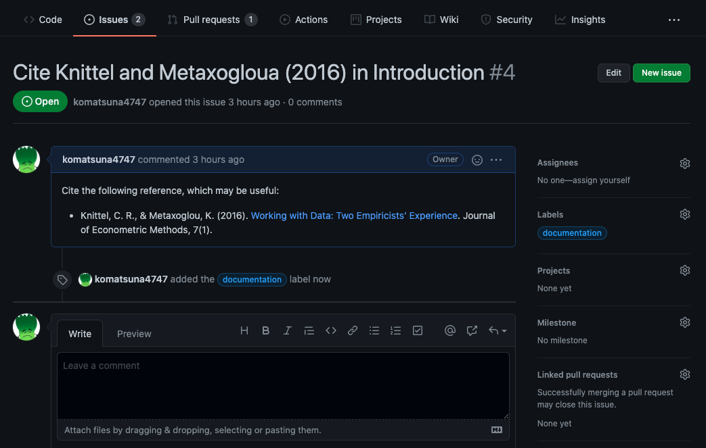
各 Issue にはラベルを付けることができる。
例えば Reviewer #1 のあるコメントに対応する Issue を立てるときは、そのコメント内容を Issue にコピーアンドペーストする。
そして Reviewer #1 のようなラベルを作成し、そのラベルをつけておく。
ラベルをふっておくことで、後にフィルタリングを行うことが容易になる。
2.1.3 Issue を解決するためにブランチを切り、その上で執筆を進める
ブランチを切る前に、まず現在の状態 (どのブランチにいるのかを含む) をgit statusで確認しておく習慣をつけておこう。
$ git status
On branch main
Your branch is up to date with 'origin/main'.
nothing to commit, working tree clean以下のようにmainからブランチを切り、そのブランチ上で作業を進める。
$ git checkout -b feature/cite-ref
Switched to a new branch 'feature/cite-ref'2.1.4 作業を適宜区切り、コミットする。各コミットがどの Issue に対応したものかを、コミットメッセージに言及しておく
参考文献情報を管理するファイル report.tex を作成し、本文で Issue で言及した文献を引用した。ここで git status で現在の状態を確認する。
$ git status
On branch feature/cite-ref
Changes not staged for commit:
(use "git add <file>..." to update what will be committed)
(use "git restore <file>..." to discard changes in working directory)
modified: report.tex
Untracked files:
(use "git add <file>..." to include in what will be committed)
report.bib
no changes added to commit (use "git add" and/or "git commit -a")report.tex に変更が加えられたこと、report.bib が新しく作成されたファイルでトラックされていないことが確認できる。
git diffを行うと、変更が加えられたファイル (ここでは report.tex) の変更の差分を確認できる。
$ git diff
diff --git a/papers/report.tex b/papers/report.tex
index 33bb60f..4403028 100644
--- a/papers/report.tex
+++ b/papers/report.tex
@@ -9,12 +9,17 @@
\usepackage{here}
\usepackage{url}
\usepackage{listings}
+\usepackage{natbib}
\begin{document}
+
\maketitle
\section{Introduction}
-This is a test.
+\citet{knittel2018working} is a good reference for data management issues in empirical research projects.
+
+\bibliography{report}
+\bibliographystyle{aer}
-\end{document}
+\end{document}
\ No newline at end of fileステージングされて以内全てのファイルをステージングさせるときは git add -u で行える。
今回はトラックされていない report.bib も加えたいので、git add report.tex report.bib とステージングさせるファイル名を指定しておく。
ステージングが終わったら、いつものように git status で確認しておく。
$ git add report.tex report.bib
$ git status
On branch feature/cite-ref
Changes to be committed:
(use "git restore --staged <file>..." to unstage)
new file: report.bib
modified: report.tex2つのファイルが無事ステージングされたことが確認できた。この状態でコミットすると、この2つのファイルの現在の状況が記録される。
それでは、この状態でコミットを行う。コミットメッセージ内で Issue の番号を入れておくと、プッシュしたときにそのコミットが Issue と紐付けられる。 こうすることで、どのコミットによって Issue に関連した変更を加えたのかの追跡が容易になる。
今取り組んでいる Issue の番号は #4 であるから、この番号をコミットメッセージに含めておく。
$ git commit -m "Cite Knittel and Metaxoglou (2018) #4"
[feature/cite-ref 681c5a4] Cite Knittel and Metaxoglou (2018) #4
2 files changed, 16 insertions(+), 2 deletions(-)
create mode 100644 papers/report.bib2.1.5 作業が完了したら pull request を作成し、共著者の確認を得る。pull request のマージをもって、Issue への対応を完了する
ファイルの変更とコミットを繰り返して Issue が解決できたら、pull request を作成して共著者の確認をもらう。
一度、これまでのコミット履歴を確認しよう。
これまでローカルリポジトリで加えた変更が、まだリモートリポジトリに反映されていない。
$ git log -2 --oneline
681c5a4 (HEAD -> feature/cite-ref) Cite Knittel and Metaxoglou (2018) #4
12fa052 (origin/main, origin/HEAD, main) Prepare a docker-latex environment on VSCodeHEAD -> feature/cite-ref は、現在ローカルで使用しているブランチが feature/cite-ref であり、その先頭を表している。リモートリポジトリには、feature/cite-ref ブランチがまだ作成されていない。
そこで、これまでローカルリポジトリで加えた変更をリモートリポジトリにプッシュして反映させる。
$ git push origin feature/cite-ref
Enumerating objects: 8, done.
Counting objects: 100% (8/8), done.
Delta compression using up to 16 threads
Compressing objects: 100% (5/5), done.
Writing objects: 100% (5/5), 796 bytes | 796.00 KiB/s, done.
Total 5 (delta 2), reused 0 (delta 0)
remote: Resolving deltas: 100% (2/2), completed with 2 local objects.
remote:
remote: Create a pull request for 'feature/cite-ref' on GitHub by visiting:
remote: https://github.com/komatsuna4747/gitpractice/pull/new/feature/cite-ref
remote:
To github.com:komatsuna4747/gitpractice.git
* [new branch] feature/cite-ref -> feature/cite-refリモートリポジトリに feature/cite-ref が新しく作られたことがわかる2。
なお現在いるブランチをリモートにプッシュする際は、ブランチ名を入力する必要はなく、HEADのみで十分である。
$ git push origin HEADもう一度ログを確認してみる。
$ git log -2 --oneline
681c5a4 (HEAD -> feature/cite-ref, origin/feature/cite-ref) Cite Knittel and Metaxoglou (2018) #4
12fa052 (origin/main, origin/HEAD, main) Prepare a docker-latex environment on VSCodeorigin とはリモートリポジトリ (GitHub) のことを指すのであったから、feature/cite-ref ブランチのリモートリポジトリの先頭は origin/feature/cite-ref である。
したがって、ローカルとリモートの feature/cite-ref の先頭が同じ位置にいることがわかる。
さて、変更がリモートに反映されたので、GitHubから pull request を作成する。
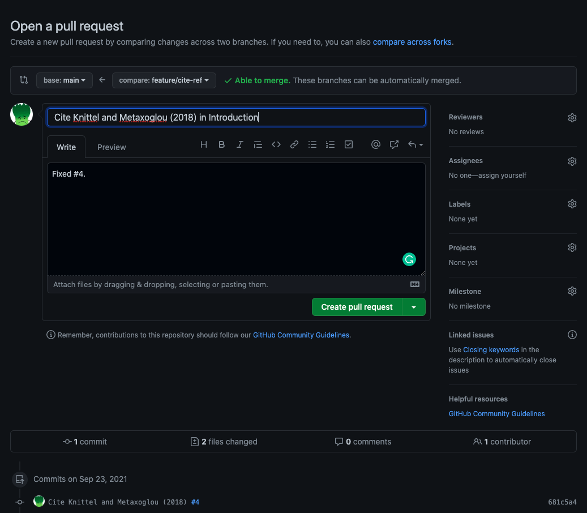
pull request の説明欄に、対応する Issue の番号を書き、Fixed、Closed などを書いておくと、この pull request がマージされたときに自動的に参照された Issue もクローズされる。
レビューする側は、加えられた変更に対してコメント、変更の提案を行うことができる。レビューを依頼した側は、提案を受け入れて変更しコミットすること (Commit suggestion) もできる。 このあたりは、Word でコメントしたり変更を加えたりするのと似ているが、Word と比較するとコメントのやり取りや変更の過程をより詳しく記録しておくことが可能である。
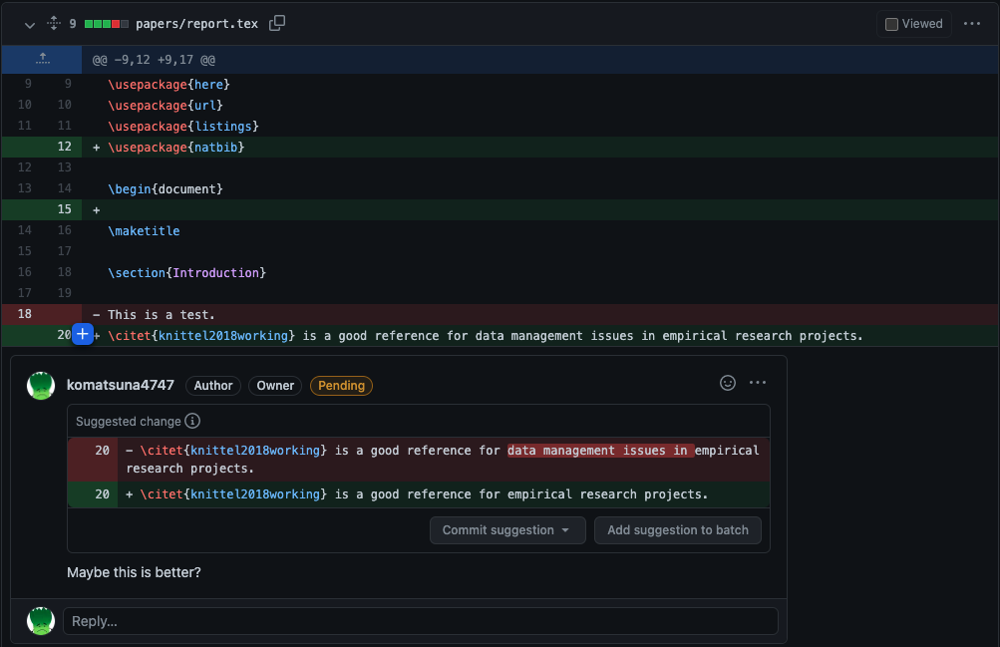
レビューが終わり、無事承認されたら、pull requestをマージして、Issue への対応を終了とする。
2.2 LaTeX の作業環境の整備
これまでLaTeXによる作業環境がすでに整っていることを前提として話をしていた。 しかし LaTeX の環境構築はそれなりに面倒である。 特に共同で論文を書くときは、各人のパソコンに LaTeX 環境を構築する必要があること、ある人のパソコンでうまくいく処理が他の人のパソコンではうまくいかないことなどハードルも高い。
LaTeX の環境構築の努力を必要最小限に抑えられる、2つの方法を紹介する。
2.2.1 Overleaf の活用
Overleaf とは、オンラインの共同 LaTeX エディタである。執筆が全てオンラインで完結するので、ユーザー登録さえしてしまえばLaTeX に関する環境構築を手元で行う必要はない。
環境構築が必要ないことに加え、
- 共著者が同時に編集を加えることができる
- Word のようにコメントや修正を加えることができる
- Git や GitHub と連携することができる (GitHub との連携は有料)
などの機能があり、便利である。
Overleaf と GitHub の連携では、Overleaf または GitHub 上で加えられた変更をそれぞれ push/pull することができる。 この場合、GitHub で対応するブランチは default branch であり、通常これは main branch である3。
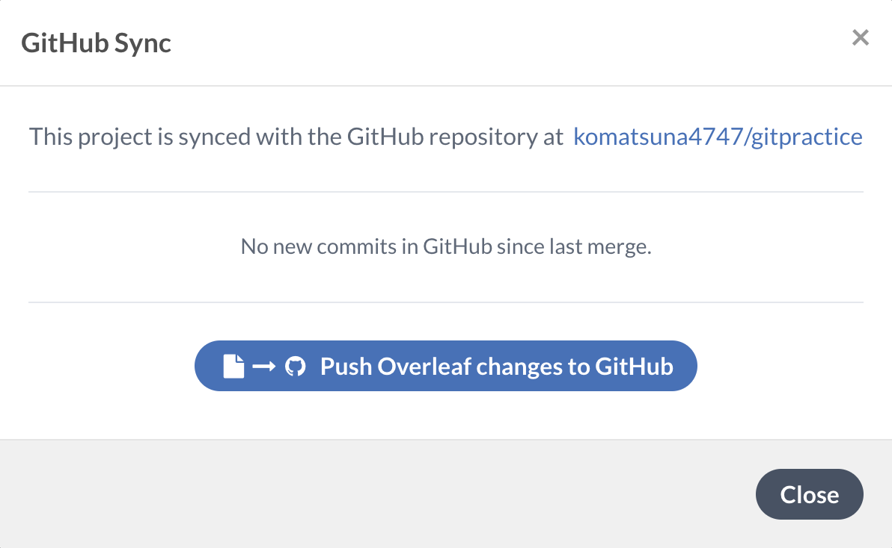
Using Git and GitHub (公式のドキュメント)
その便利さの一方、Overleaf ではブランチを切って各人が別に執筆を進めるという機能が現時点では存在しない。したがって Overleaf のみで無秩序に執筆を続けていくと、コメントや修正が込み入ってくると、誰のコメントにいつ対応したか、ある修正がいつ行われたかがプロジェクトが長期化するにつれて曖昧になってくる。 Overleaf を用いて共同で執筆を行う場合、上記の問題をどう解決するかは検討の余地がある。
Git/GitHub を用いた論文執筆のメリットは、こうしたコメント・修正を Issue・コミット・pull request を通じて記録できることにある。
2.2.2 Docker + VSCode の活用
LaTeX を用いた執筆の鬼門は、その環境構築にある。 その環境構築の問題を Docker によって解決しようというのが2つ目のアプローチである。
Docker の詳細は経済セミナーの第2回目の連載に譲るが、LaTeX が使える環境が整った コンテナ (container) という仮想環境を作成し、その中でコンパイルするという方法である。 この Docker を使った利点は、
- 同じ LaTeX 環境を複数人が容易に構築することができる
- 自分のローカル環境を汚さずに、LaTeX の執筆環境を作成することができる。必要がなくなれば消すことも容易である。
などが挙げられる。
Visual Studio Code、略して VSCode はエディタの1つであり、数多くの拡張機能によって好みの開発環境を容易に構築することが可能である。
VSCode と Docker を組み合わせて LaTeX の環境構築を行う方法は、検索すれば多数ヒットする。 それらを参考にして、ここでは VSCode + Docker + LaTeX の1つの方法を紹介する。 Docker のインストール、VSCode のダウンロードは省略する (To do: 将来追記しておく)。
[To do: Docker + LaTeX の概念図を作って入れる]
2.2.2.1 VSCode で拡張機能「LaTeX Workshop」をインストールする。
LaTeX Workshop は、VSCode で LaTeX を扱う上で便利な拡張機能である。
VSCode の左側にあるブロックのようなアイコンをクリックし、LaTeX Workshop と検索窓に入れる。 LaTeX Workshop が見つかるはずなので、それをインストールする。
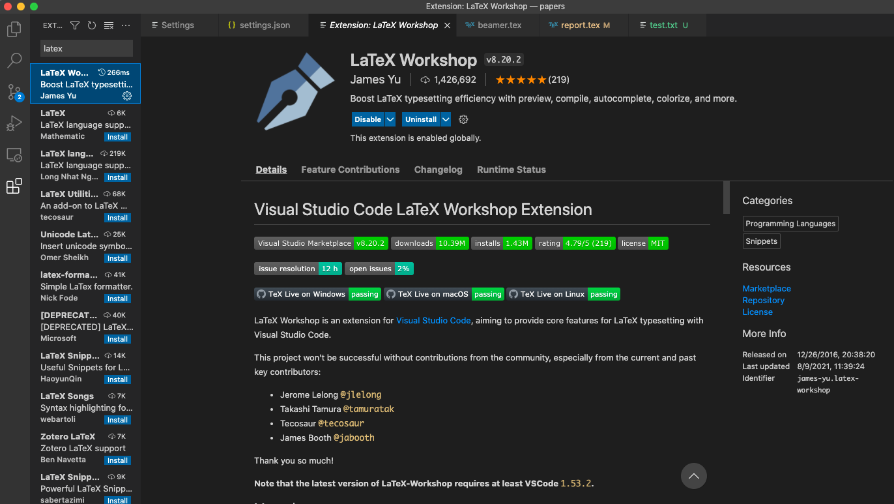
2.2.2.2 LaTeX が使える Docker イメージをプルする
LaTeX Workshop は、LaTeX の環境構築が終わっていることを前提とした拡張機能であるため、LaTeX の環境構築を行う必要がある。 そこで、LaTeX が使えるコンテナを起動する Docker image を手元に準備する。
Dockerfile を書いて from scratch に作成してもよいが、こうしたイメージはすでに世の偉人たちが作成し使えるようにしてある。
ここでは ghcr.io/xu-cheng/texlive-full:latest という Docker image を pull して使用する。日本語も使用したい場合は、paperist/alpine-texlive-ja が良いだろう。
docker pull ghcr.io/xu-cheng/texlive-full:latest2.2.2.3 settings.json を編集する
上で pull した Docker image からコンテナを立ち上げ、そのコンテナの中でコンパイルするように、LaTeX Workshop に指示したい。 そこで VSCode の settings を変更する。
VSCode の左下の歯車のアイコンを選択し、Settings を選択する。

そして右上に現れる書類のようなアイコンを選択し、settings.json ファイルを開く。
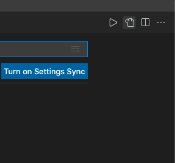
settings.json に、以下を書き加えよう。
{
"latex-workshop.latex.clean.fileTypes": [
"*.aux", "*.bbl", "*.blg", "*.idx", "*.ind", "*.lof", "*.lot", "*.out", "*.toc", "*.acn", "*.acr", "*.alg", "*.glg", "*.glo", "*.gls", "*.ist", "*.fls", "*.log", "*.fdb_latexmk", "*.synctex.gz",
// for Beamer files
"_minted*", "*.nav", "*.snm", "*.vrb",
],
"latex-workshop.latex.autoClean.run": "onBuilt",
"latex-workshop.latex.recipes": [
{
"name": "compile",
"tools": [
"tex2pdf"
]
}
],
"latex-workshop.latex.tools": [
{
"name": "tex2pdf",
"command": "docker",
"args": [
"run",
"--rm",
"-v",
"%DIR%:/usr/workdir",
"-w",
"/usr/workdir",
"ghcr.io/xu-cheng/texlive-full",
"latexmk",
"%DOCFILE_EXT%",
"-pdf"
]
}
],
"latex-workshop.latex.autoBuild.run": "onFileChange",
"latex-workshop.view.pdf.viewer": "tab"
}latex-workshop.latex.clean.fileTypesは、コンパイルするときに生成される不必要なファイルのうち、削除したいものを指定している。そのアクションがコンパイルされるときに実行されるよう指示しているのが"latex-workshop.latex.autoClean.run": "onBuilt"である。- 使用するコンパイラーを
"latex-workshop.latex.recipes"で書く。その定義を下の"latex-workshop.latex.tools"に書く。 - Docker に関してのコマンドの説明は省くが、コンパイルするときに
ghcr.io/xu-cheng/texlive-fullからコンテナを立ち上げ、latexmkコマンドを使い、current directory にある tex ファイルをコンパイルする。コンパイルが終わったら、コンテナを壊す。 "latex-workshop.latex.autoBuild.run": "onFileChange"は、tex ファイルに変更が加えられるごとに、コンパイルが行われるよう設定である。
設定がうまくいけば、texファイルに変更が加えられるごとにコンパイルが行われ、作成された pdf ファイルを確認することができる。
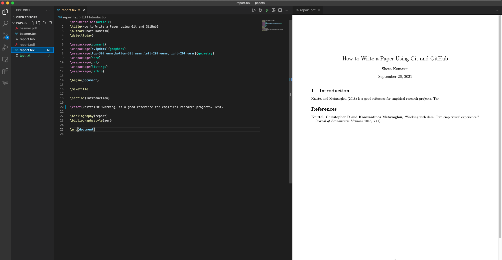
2.3 継続的インテグレーションにより、GitHub 上で自動的にコンパイルする
共著者の中には論文をチェックできれば良い人もいるため、そういう人にとっては tex ファイルをプルしてコンパイルする作業が面倒であったりする。
コンパイルできる人がローカルで pdf を作成し、それをリモートリポジトリにプッシュするのも良いだろうが、プッシュし忘れて、tex ファイルのバージョンと pdf ファイルのバージョンが食い違ったりすることもあり得る。
手作業による運用は往々にしてミスを生みがちなので、この辺を自動化したい。
つまり、 tex ファイルだけをプッシュすれば GitHub が勝手にコンパイルしてくれたりしないだろうか。
それを可能にする機能の1つが、GitHub Actions である。GitHub Actions とは、開発者のワークフローを GitHub 上で自動化するためのツールである。
https://github.com/features/actions
執筆者がローカルで tex file をコンパイルして、pdf ファイルをアップロードする一連のワークフローを GitHub Actions にお任せしたい。 このように、ローカルで手動で行っていたワークフローを自動化し、プログラムに変更があるたびに都度ビルド・テストをを行える環境を作ることを、継続的インテグレーション (Continuous Integration: CI) と呼ぶ。
始め方は、リポジトリのルートディレクトリに .github/workflowというディレクトリを作り、その中に yaml ファイルを作成すればよい。
これは GitHub の Actions からも作成することは可能である。
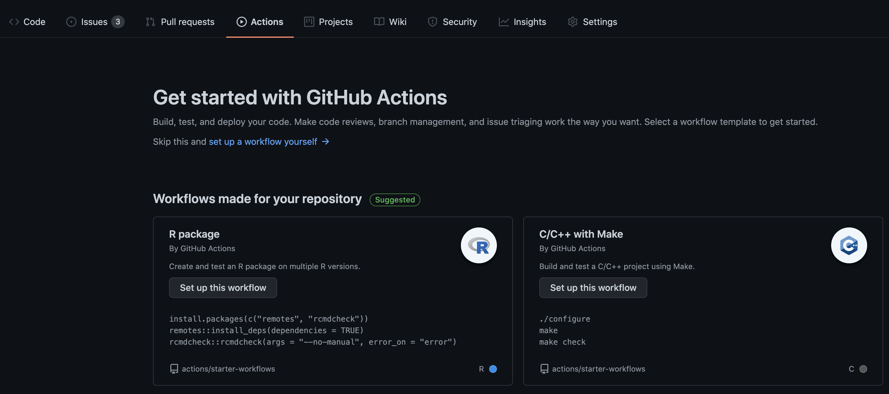
ひとまず komatsuna4747/gitpractice/.github/workflow に以下のような main.yamlを作成した。
今回のワークフローの自動化では、こちらを利用している4。
# This is a basic workflow to help you get started with Actions
name: Build LaTeX document
# Controls when the workflow will run
on:
push:
paths:
- 'papers/report.tex'
jobs:
build_latex:
runs-on: ubuntu-latest
steps:
- name: Set up Git repository
uses: actions/checkout@v2
- name: Compile LaTeX document
uses: xu-cheng/latex-action@v2
with:
working_directory: papers
root_file: report.tex
- name: Copy PDF file
run: mkdir docs && cp papers/*.pdf docs/
- name: Deploy pages
uses: peaceiris/actions-gh-pages@v3
with:
github_token: ${{ secrets.GITHUB_TOKEN }}
publish_dir: ./docsTo do: この詳細を書く。若干微調整している。
書かれてある内容の詳細は省くが、このファイルを容易することで、変更が加えられた tex ファイルが GitHub のリポジトリにプッシュされるごとに
- tex ファイルがコンパイルされて pdf が作成され
- 作成された pdf ファイルが
gh-pagesというブランチにプッシュされる
以上を自動的に行ってくれるようになる。したがって pdf ファイルだけを見たい人は、gh-pages の pdf をダウンロードして読めばよいことになる。
さらに、変更が加えられた tex ファイルがプッシュされるごとに、gh-pages の pdf も更新されるので、tex のファイルのバージョンと pdf のバージョンが常に最新版でリンクするようになるわけである。
実際にどのように動くのかを見てみよう。
まず、tex ファイルに以下のような変更を加えてコミットし、プッシュする。
$ git diff
diff --git a/papers/report.tex b/papers/report.tex
index 117cbb2..327440f 100644
--- a/papers/report.tex
+++ b/papers/report.tex
@@ -17,7 +17,7 @@
\section{Introduction}
-\citet{knittel2018working} is a good reference for data management issues in empirical research projects.
+\citet{knittel2018working} is a good reference for empirical research projects.
\bibliography{report}
\bibliographystyle{aer}$ git add -u
$ git status
On branch feature/check-ci
Changes to be committed:
(use "git restore --staged <file>..." to unstage)
modified: report.tex
$ git commit -m "Make a change"
[feature/check-ci 482bf95] Make a change
1 file changed, 1 insertion(+), 1 deletion(-)
$ git status
On branch feature/check-ci
nothing to commit, working tree clean
$ git push origin HEAD
Enumerating objects: 7, done.
Counting objects: 100% (7/7), done.
Delta compression using up to 16 threads
Compressing objects: 100% (4/4), done.
Writing objects: 100% (4/4), 345 bytes | 345.00 KiB/s, done.
Total 4 (delta 3), reused 0 (delta 0)
remote: Resolving deltas: 100% (3/3), completed with 3 local objects.
remote:
remote: Create a pull request for 'feature/check-ci' on GitHub by visiting:
remote: https://github.com/komatsuna4747/gitpractice/pull/new/feature/check-ci
remote:
To github.com:komatsuna4747/gitpractice.git
* [new branch] HEAD -> feature/check-ci変更が加えられた tex ファイルがプッシュされたので、以下のようにコンパイルをするための準備、およびコンパイルが始まった。
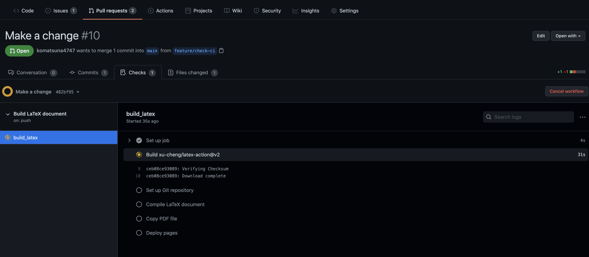
しばらく待つと、全ての作業が完了した。どこかで失敗が起こった場合、登録したメールアドレスの方に GitHub Actions のワークフローが失敗した通知が届く。
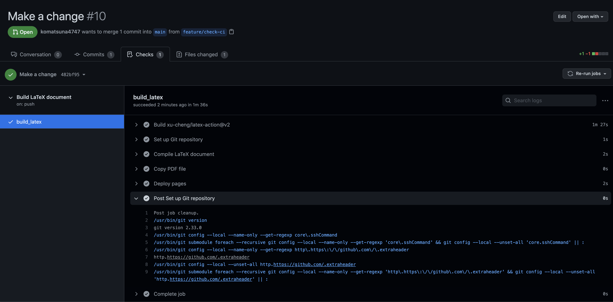
gh-pages ブランチの pdf ファイルを見ると、確かに変更が反映された pdf がアップロードされていることがわかる。
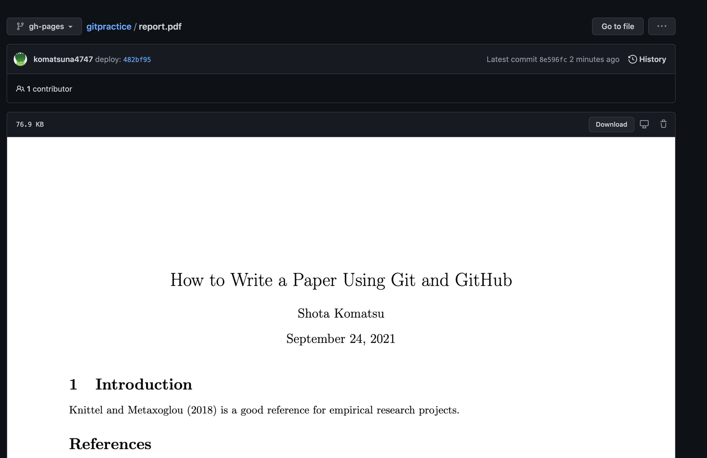
過去の pdf をみたい場合は、そのファイルの history からたどることができる。
tex のソースファイルを見たくない共著者にはこの pdf を共有して、コメントをもらえばよい。
この GitHub Actions を用いた継続的インテグレーションは、tex ファイルのコンパイルだけでなく、分析コードのビルド・単体テスト、分析コードの実行の自動化にも応用可能である。 このあたりは別途書いてみたい。
2.3.1 注意点
GitHub Actions は、
- パブリックリポジトリだと無料
- プライベートリポジトリだと、以下の無料枠を使い切ったあとは従量課金制である
- Free アカウントだと 2000分/月まで無料
- Pro アカウントだと 3000分/月まで無料
なので GitHub Actions の使い方を練習したい場合は、念の為パブリックリポジトリで行うほうが良いだろう。
また上記の tex ファイルのコンパイルの自動化も、1回あたり数分で終わるため、よほど何回も変更が加えられた tex ファイルをプッシュしない限り、月の無料枠を使い切ることは考えにくい。
WordファイルもGitでバージョン管理することは可能であるが、前回と比較してどの部分に変更を加えたかという差分を表示することができない。 Wordファイルなどのバイナリファイル (binary file) は、Git での管理にはあまり向いていない。↩︎
origin/HEADは、リモートリポジトリoriginをクローンした時にダウンロードされるコミットの位置を表す。 通常origin/masterと同じ位置を指す。↩︎Setting により、default branch は変更することが可能である。↩︎
本来は、ローカルで Docker を用いた LaTeX 環境と同じもので GitHub 上でもコンパイルできるようにした方が理想である↩︎